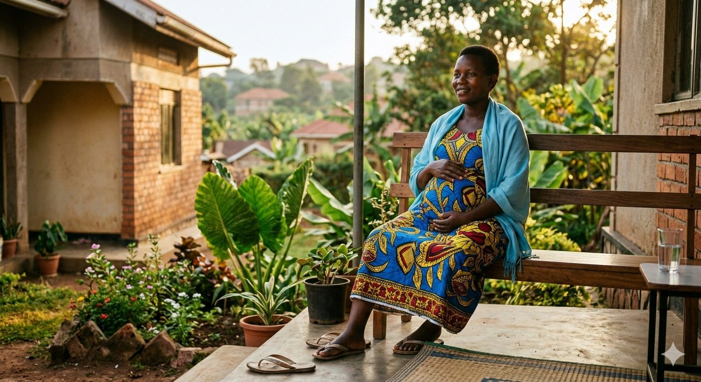
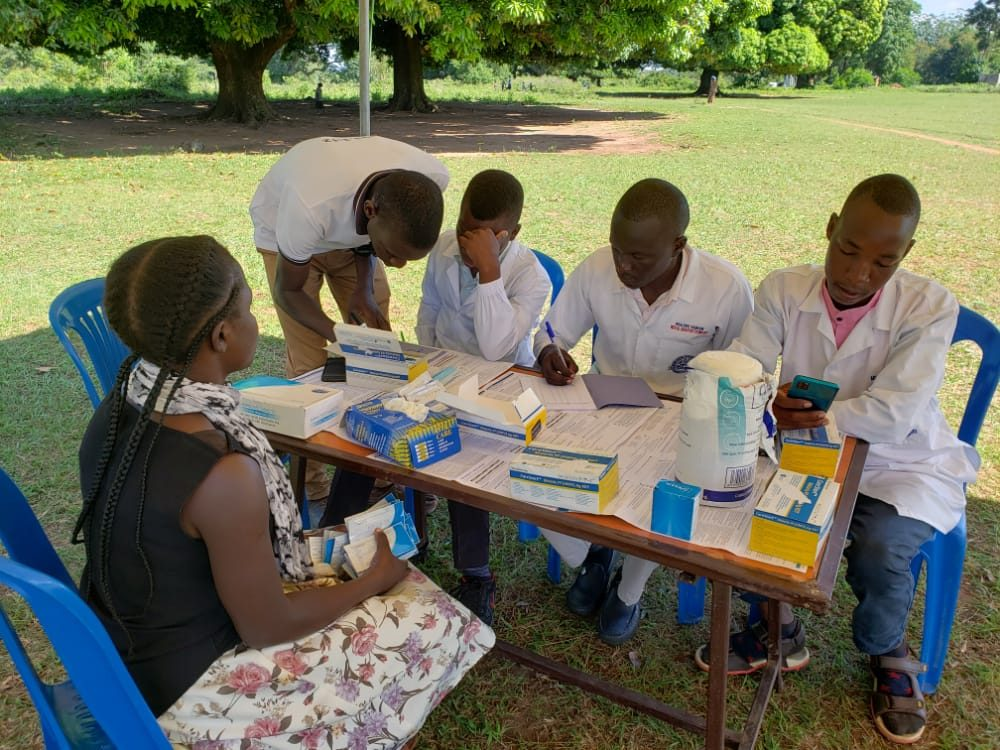
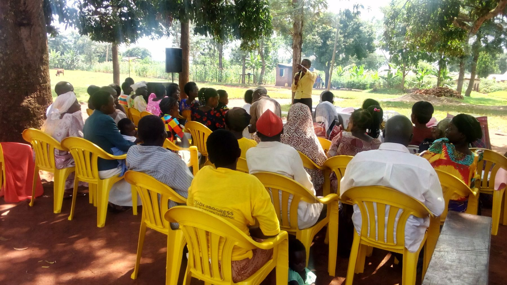

Every mother deserves a safe journey.
We are a youth-led, community-powered maternal health initiative making safe pregnancy, safe delivery and safe postpartum care possible for every mother.
Every mother deserves a safe journey.
SafeMom Navigator was born from a simple but powerful belief: every mother deserves a safe, supported and dignified journey through pregnancy, childbirth and postpartum.
Yet in many communities mothers still face preventable delays: delays in recognising danger signs, in reaching a health facility, and in receiving timely care. To bridge these gaps we introduced a youth-led, community-powered model that places trained young people at the heart of maternal health support.
These youth navigators walk alongside mothers from the first trimester to one year postpartum, offering education, follow-up, emotional support and emergency coordination. What began as a small initiative in Jinja District has grown into a scalable model that strengthens community health systems, empowers youth and saves lives.

Three preventable delays.
Most maternal deaths follow one of three delays. Our navigators are placed to close each one.
1. Delay in recognising danger signs
Families do not always know which symptoms are urgent. Navigators teach danger signs early and check in regularly.
2. Delay in reaching a health facility
Distance, cost and transport can stand between a mother and care. Navigators coordinate emergency transport and referral.
3. Delay in receiving timely care
Facilities that are not expecting a mother lose precious minutes. Navigators alert them in advance for priority care.
Our mission
To empower communities with the knowledge, tools and support needed to ensure safe pregnancy, safe delivery and safe postpartum care for every mother, starting at the household level.
Our vision
A Uganda where no mother dies while giving life, and where every woman, regardless of location, income or background, receives timely, compassionate and high-quality maternal health support.
The values behind our work.
Compassion
Every mother deserves dignity and care.
Equity
No woman should be left behind.
Community
Solutions must be rooted in local realities.
Youth empowerment
Young people are catalysts for change.
Innovation
Technology should simplify, not complicate.
Accountability
Data drives improvement and transparency.
Growing step by step.
Where it began
A small initiative in Jinja District began supporting its first mothers with youth navigators.
A trained youth network
50+ youth navigators are trained, and 20+ mothers have been supported through pregnancy, delivery and recovery.
Looking ahead
We aim to extend our life-saving services to all 135 districts of Uganda, with 1,500+ new navigators trained along the way.


Serving Uganda’s communities.
We focus on communities where maternal health needs are greatest and where digital and community-based solutions can make the strongest impact.
- Jinja District: our primary operational base and pilot area
- Surrounding rural and peri-urban communities: where access remains limited
- Health facility catchment areas: strengthening referral pathways
Our community-centred model combines household-level maternal support, youth-led navigation and follow-up, digital tools linking mothers, navigators and facilities, and strong partnerships with local leaders and healthcare providers.
Strategic oversight.
Our Board provides governance and accountability, with expertise in public health, maternal care, youth development, digital innovation and community systems.
Dr Okoro Lenz Nwachinemere
Board ChairExpert in maternal and child health systems strengthening.
Kuli Faith Rombe
Board MemberPublic health researcher specialising in malaria, HIV and epidemiology.
Mr Kyomuhendo Bruhan
Board MemberDigital health and innovation specialist.
Mr Asingwire Micheal Jackson
Board MemberCommunity development and youth empowerment advocate.
Nabiryo Oliver
Board MemberRegistered nurse with expertise in child and maternal health, mental health and youth advocacy.
The people behind the mission.
From visionary leadership to dedicated field navigators, every team member plays a crucial role in saving mothers’ lives.
Isiko Isaac
Executive Director & Co-FounderFounder of SafeMom Navigator, public health practitioner and youth empowerment advocate. Leads strategic direction and partnerships.
Mr Tobiloba Oyejide Alex Omotosho
Director, Research and InnovationBSc in Nursing and MSc in Community Health Nursing. Registered nurse and lecturer, pursuing a PhD in Nursing.
Dr Mirembe Christine Sabano
Programs DirectorMedical doctor. Leads maternal and child health initiatives, navigator training and community engagement.
Mr Bukenya Huzaifah
Digital Health LeadOversees the SafeMom Navigator digital platform, data systems and technology integration.
Nakatabira Rebecca
Community Engagement CoordinatorMidwifery expert. Leads outreach and health education in remote areas and partners with local leaders.
Mr Isiko Jonathan Emmanuel
Operations DirectorLeads community mobilisation, coordinates mother support groups and develops local partnerships.
Ms Okoro Irene
Partnership ManagerBuilds and manages strategic partnerships with organisations, stakeholders and community groups.
Mr Daniel Kiprotich Bett
Project CoordinatorLeads community mobilisation efforts and coordinates mother support groups.
The heart of SafeMom.
Our youth navigators are trained, compassionate and deeply committed to supporting mothers in their communities.
Sarah
Jinja DistrictKnown for dedication and emergency response skills. 24+ mothers supported.
Maria Nansubuga
Walukuba-MaseseRecognised for outstanding postpartum follow-up and newborn care support.
Peter Mugisha
BugembeLeads in community mobilisation and birth preparedness education.
Abdul Kizza
MafubiraKnown for strong counselling skills and high-risk case referrals.
A Uganda where no mother dies while giving life.
Every woman deserves timely, compassionate and high-quality maternal health support.